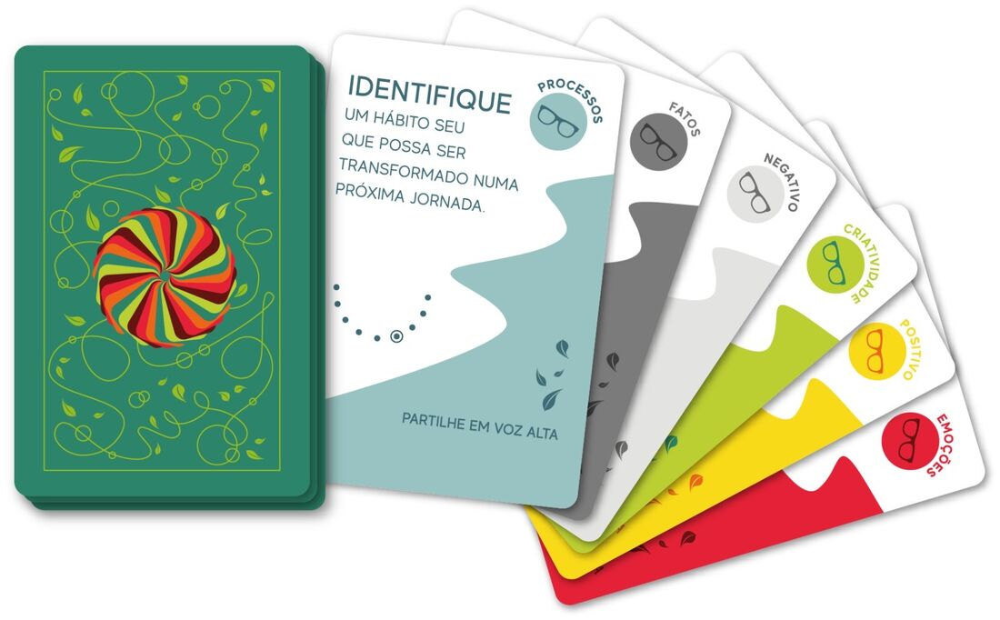
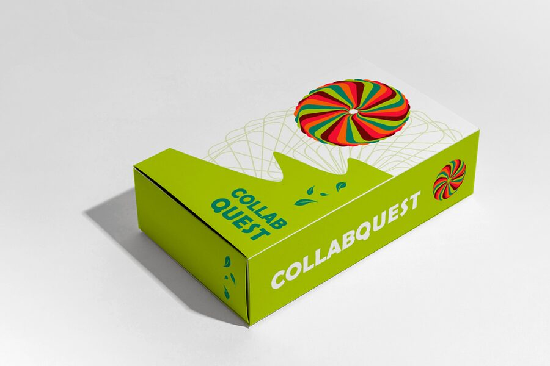

O Jogo da Apreciação
Um baralho de 54 cartas para honrar a jornada que você viveu. Profundo como um ritual, leve como um jogo.
O Jogo
Um projeto, um ciclo de vida, um relacionamento, um ano vivido. E não só ao final: qualquer momento do caminho é momento de apreciar.
O CollabQuest transforma essa apreciação em jogo. A cada carta, um convite: relembrar, sentir, expressar, agradecer. Pelas cores, emoções e cenários que despertam, as cartas conduzem a um estado de presença que abre novas percepções sobre o caminho percorrido.

Antes de embaralhar
Não há pontos, vencedores nem respostas certas.
O jogo toca em profundidades. Permita-se entrar no espaço de vulnerabilidade, sabendo que cada pessoa é responsável pelo que sente e pelo que escolhe partilhar.
Quem tira a carta dá a sua própria interpretação. O que emerge é o que vale.
Preparação
Você vai precisar do baralho, de papel e caneta para cada pessoa, de um espaço tranquilo e de tempo sem pressa. De uma pessoa em diante. Nenhuma facilitação é necessária.
O que será celebrado? Um projeto, uma meta, a vida, um vínculo.
Antes da primeira carta, um momento de quietude para cada pessoa se conectar com a jornada. Se quiserem um caminho guiado, use o roteiro de centramento.
Como jogar
Preparem-se: jornada, acordos e ciclo de silêncio.
Uma pessoa tira uma carta e se deixa guiar por ela.
A vez passa adiante.
Joguem quantas rodadas quiserem.
Definam uma jornada em comum, ou cada pessoa escolhe a sua (veja as variações).
Celebrem a jornada que vocês compartilham. A carta ora guia um, ora guia o outro.
Você conduz o próprio ritual. Tire uma carta por vez e registre no papel o que emergir.
Encerramento: ao final das rodadas, abram a roda: agora, sim, é hora de comentar, ecoar e reconhecer o que emergiu. Fechem com um gesto de gratidão pela jornada e por quem a viveu com você.
Colhidas em dezenas de partidas
Partidas sem o ciclo de silêncio perdem a magia. O estado de escuta profunda é o coração do jogo.
Evite trocar de jornada a cada rodada. A experiência mostrou que o mergulho pede continuidade.
A subjetividade das cartas permite novas interpretações: se a mesma carta sair de novo, algo novo virá dela.
Mesmo que a resposta pareça não ter a ver com a carta, acolha o que veio.
Para as cartas mais introspectivas, quem preferir pode registrar no papel em vez de falar.
Nas cartas que convidam a fechar os olhos, peça que outra pessoa leia para você.
Com menos pessoas há mais rodadas, e mais profundidade.
"As cartas que saíram pareciam ser pra mim" é a frase mais ouvida nas partidas. Deixe o campo atuar.
Variações
Em grupo, há dois caminhos. Na jornada aberta, cada pessoa revela ao grupo qual jornada veio celebrar, e todos acompanham as histórias uns dos outros. Na jornada oculta, cada pessoa guarda a sua em segredo e responde às cartas a partir dela: joga-se junto, mergulha-se só. As duas formas funcionam. Escolham a que oferecer mais segurança ao grupo.
Quando a jornada é comum a todo o grupo (um projeto compartilhado, um ciclo vivido junto), experimentem tirar uma única carta por rodada e deixar que todas as pessoas respondam a ela. As partidas ficam mais lentas e mais profundas: numa hora de jogo, uma única carta pode render um mergulho inteiro.
O jogo já celebrou natais, encerramentos de cursos e até a memória de entes queridos, com cada pessoa apreciando a jornada vivida com alguém que já partiu. Onde houver uma jornada, há um jogo possível.
Ciclo de silêncio
Para o momento de quietude antes da primeira carta, se quiserem um caminho guiado. Uma pessoa pode ler em voz alta, com calma, para as demais.
Acalme-se e conecte-se com o seu corpo. Sinta onde ele toca a cadeira ou o chão.
Note o seu peso e como a Terra lhe dá suporte. Se fosse uma pessoa oferecendo esse apoio, você o chamaria de amor incondicional.
Respire profundamente. Escute a diferença de tom e sinta a diferença de temperatura entre a inspiração e a expiração: esse calor vem do Sol. Você é a dança dos ciclos da Terra com a energia do Sol.
Você consegue escutar as batidas do seu coração? Elas estão com você desde antes de nascer.
Encontre o ponto onde a energia no seu corpo é mais forte. Inspire para dentro dele, relaxe, e expire a tensão para fora.
Agora, deixe vir a jornada a ser apreciada.
O Baralho
O CollabQuest é um mix de tecnologias sociais. Na criação das cartas, nos inspiramos em abordagens como a Teoria U e os Seis Chapéus do Pensamento, entre outras fontes que estudamos e vivenciamos. Cada carta carrega o selo de sua categoria.
O jogo nasceu como produção do curso Introdutório de Design Colaborativo de Projetos e foi lapidado em dezenas de partidas reais, cujos aprendizados vivem neste guia.
